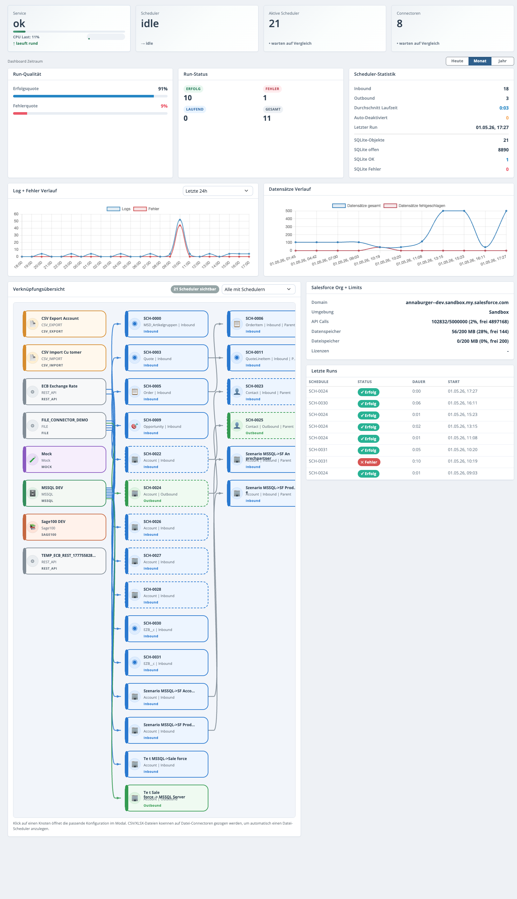
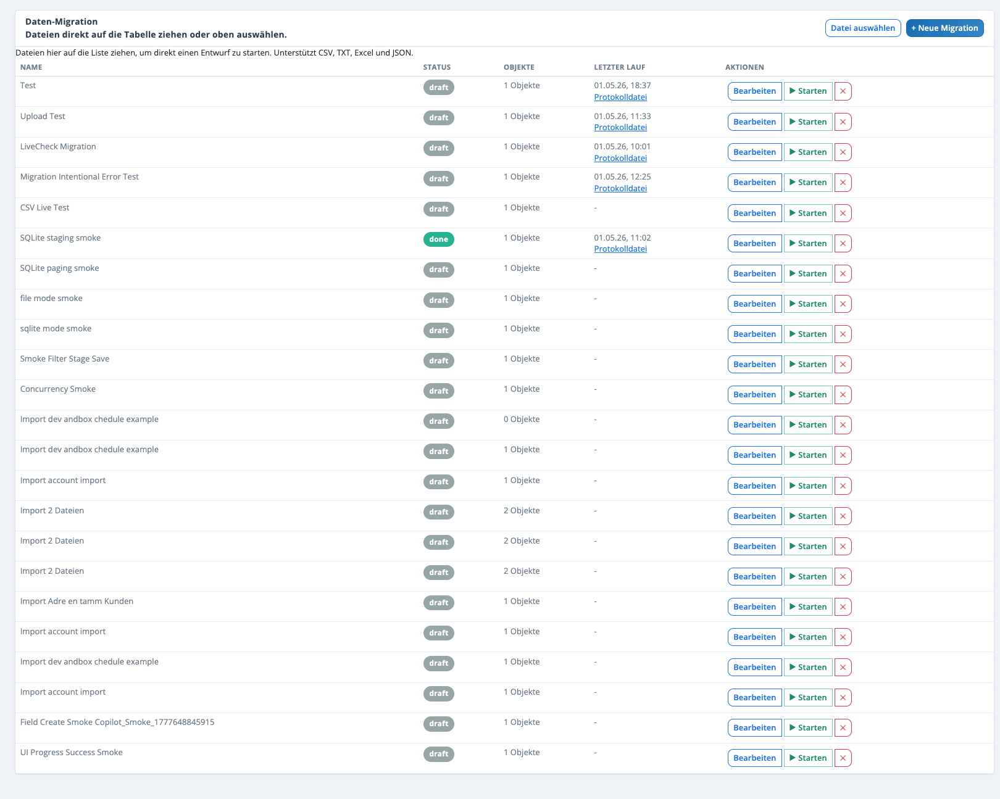
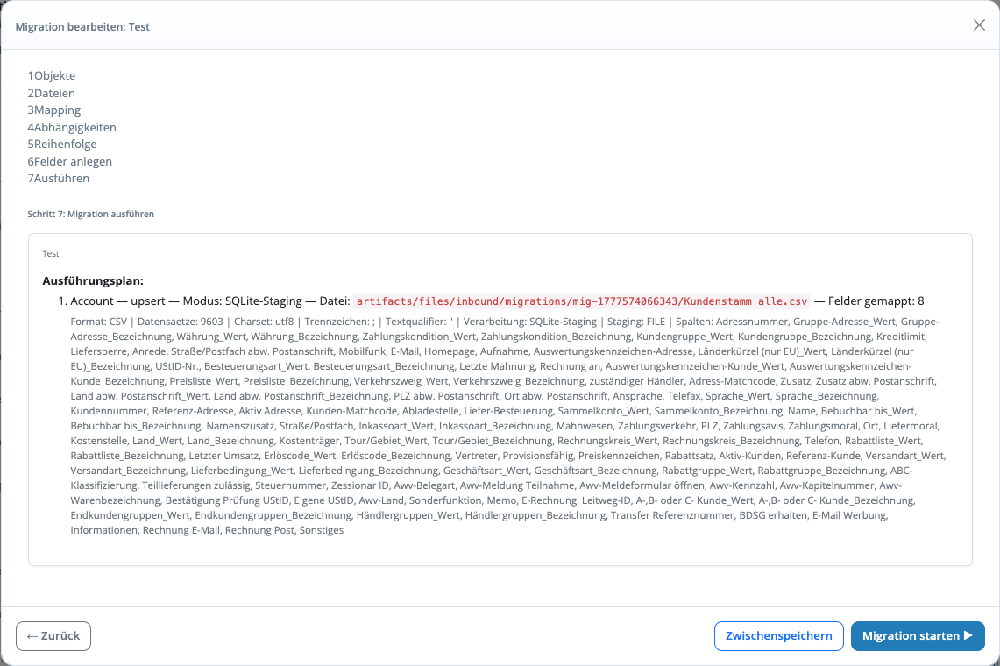

Der SF On-Prem Integration Agent fuer Vertrieb, Service und Backoffice
Datenfluesse aus Salesforce zentral steuern, On-Prem Systeme sicher anbinden und Dateiimporte in Minuten statt Tagen produktiv machen.
Der Agent verbindet Scheduler, Monitoring, Dateiverarbeitung und Salesforce-Mappings in einer Oberflaeche.
Salesforce Control Plane Schedules, Runs und Logging zentral verwalten
CSV, Excel, JSON Dateiimporte per Auswahl oder Drag & Drop
SQLite-Staging Zwischenspeichern, analysieren und sicher weiterverarbeiten
MSSQL & REST On-Prem Quellsysteme ohne Medienbruch anbinden
Monitoring & Reports Status, Fehler, Protokolle und Runs auf einen Blick
Windows Service & Auto-Update Betriebsreif fuer Kundeninstallationen
Wo der Agent im Kundengespraech punktet
Ideal fuer Unternehmen mit Salesforce im Frontend und On-Prem Anwendungen im Backend, die Importe, Exporte oder wiederkehrende Abgleiche ohne individuelle Einzelloesungen standardisieren wollen.
Schneller produktiv
Dateien direkt in Migrationsentwuerfe uebernehmen, Felder mappen, fehlende Salesforce-Felder anlegen und den Lauf unmittelbar testen.
Besser steuerbar
Salesforce dient als Steuerungsebene fuer Profile, Zeitregeln, Ausfuehrungen und Status. Das reduziert Abstimmungsaufwand zwischen Fachbereich und IT.
Sicherer Betrieb
Overlap-Schutz, Windows-Dienst, Auto-Update, Backup- und Rollback-Mechanismen machen aus einem Skript einen betreibbaren Agenten.
Bildschirmfotos aus der Anwendung
Die Screens zeigen die reale Oberflaeche des Agenten: Management-Dashboard, Migrationsliste und den gefuehrten Assistenten fuer Ausfuehrung und Mapping.

Live-Dashboard fuer Betrieb und TransparenzService-Status, Scheduler, Run-Qualitaet, Verlauf, Salesforce-Limits und verknuepfte Datenfluesse in einer Ansicht.

Datei- und MigrationssteuerungEntwuerfe anlegen, Status einsehen und Dateiimporte fuer CSV, TXT, Excel und JSON direkt starten.

Gefuehrter MigrationsassistentObjekte, Dateien, Mapping, Abhaengigkeiten und Ausfuehrung in einem linearen, vertriebsdemofaehigen Prozess.